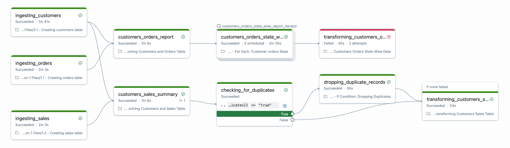

Section 4 · Working with Lakeflow Jobs · Quelle: Kurs 2, Kapitel 11–12
Auch der am besten gestaltete Workflow wird irgendwann einmal fehlschlagen – sei es wegen eines Konfigurationsfehlers, einer defekten Quelldatei oder eines vorübergehenden Ressourcenengpasses. Entscheidend ist nicht, Fehler vollständig zu vermeiden, sondern effizient auf sie reagieren zu können. Lakeflow Jobs bietet dafür die Funktion Repair and Rerun sowie umfangreiche Monitoring-Werkzeuge über System-Tabellen und die Spark-UI.
Statt bei einem Fehlschlag den gesamten Job von vorne zu starten, erlaubt Repair Run die selektive Wiederholung: Nur die fehlgeschlagenen Tasks – und alle davon abhängigen Tasks – werden erneut ausgeführt. Das spart erheblich Zeit und Rechenkosten, besonders bei umfangreichen, mehrstufigen Workflows. Zusätzlich lassen sich beim Reparaturlauf Parameter überschreiben, sodass sich typische Fehlerursachen direkt beheben lassen:
Wichtig zu verstehen: Das Reparieren eines Laufs behebt nicht automatisch die Job-Definition selbst. Wurde beispielsweise ein falscher Parameterwert übergeben und im Reparaturlauf manuell korrigiert, muss diese Korrektur zusätzlich dauerhaft in der Job-Konfiguration nachgezogen werden, damit künftige reguläre Läufe nicht erneut fehlschlagen.
Ein typischer Ablauf: Ein Task schlägt fehl, weil im Code eine falsche Spaltenbezeichnung referenziert wird. Die Fehlerbehebung erfolgt in wenigen Schritten:
Die Farbkodierung im DAG hilft bei der schnellen Einschätzung eines Laufs:
| Farbe | Bedeutung |
|---|---|
| Grau | Task noch nicht gestartet |
| Grün, gestreift | Task läuft aktuell |
| Grün, durchgehend | Task erfolgreich abgeschlossen |
| Rot, dunkel | Task fehlgeschlagen |
| Rot, hell | Task übersprungen, da ein vorgelagerter Task fehlgeschlagen ist |

Für tiefergehende Analysen über einzelne Läufe hinaus bietet Databricks den System-Katalog system.lakeflow. Er protokolliert automatisch sämtliche Job-Aktivität über alle Workspaces einer Region hinweg und stellt unter anderem folgende Tabellen bereit:
jobs – grundlegende Job-Metadaten und Konfigurationjob_tasks – Task-Definitionen und -Konfigurationenjob_run_timeline – vollständige Ausführungshistorie jedes Job-Laufsjob_task_run_timeline – detaillierte Ausführungshistorie einzelner Taskspipelines – Informationen zu Lakeflow-Declarative-Pipelines-LäufenDie Timeline-Tabellen zerlegen lang laufende Jobs mittels period_start_time und period_end_time in Stundenabschnitte, was präzise Laufzeitanalysen, Nebenläufigkeits-Tracking und SLA-Messungen ermöglicht – auch für komplexe, lange laufende Workflows. Damit lassen sich Kostenanalysen, Performance-Trends und Ressourcenauslastung systematisch auswerten:
-- Verfuegbare Tabellen im system.lakeflow-Schema anzeigen
SHOW TABLES IN system.lakeflow;
-- Jobs mit ihrer Task-Ausfuehrungshistorie verknuepfen
SELECT jobs.workspace_id,
jobs.name AS job_name,
jobs.job_id,
timeline.run_id,
timeline.period_start_time,
timeline.period_end_time,
timeline.task_key,
timeline.result_state
FROM system.lakeflow.jobs AS jobs
INNER JOIN system.lakeflow.job_task_run_timeline AS timeline
ON jobs.job_id = timeline.job_id
WHERE lower(jobs.name) LIKE 'demo_12_retail_job_%'
ORDER BY timeline.period_start_time;
Für die Detailanalyse einzelner Task-Läufe liefert die Spark-UI zusätzliche Einblicke: Die Ausführungs-Timeline zeigt Task-Dauer, Überlappungen und Engpässe auf einen Blick; ein Klick auf einzelne Stages offenbart Ausführungspläne, Optimierungsentscheidungen, Dateizugriffsmuster und Partitionsinformationen. Typische Warnsignale sind eine hohe Planning Time (deutet auf Optimierungsbedarf bei Partitionierung oder Metadaten hin) und eine hohe Execution Time (deutet auf Join-Optimierung, Broadcast-Strategien oder Skew-Behandlung hin).